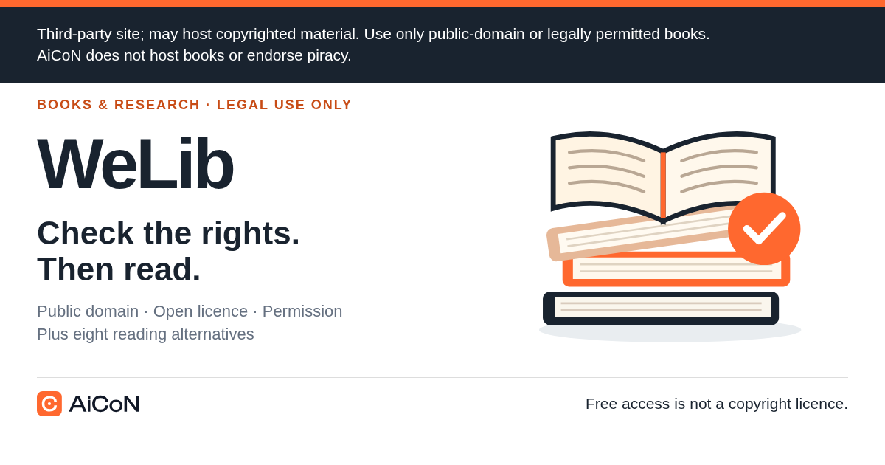
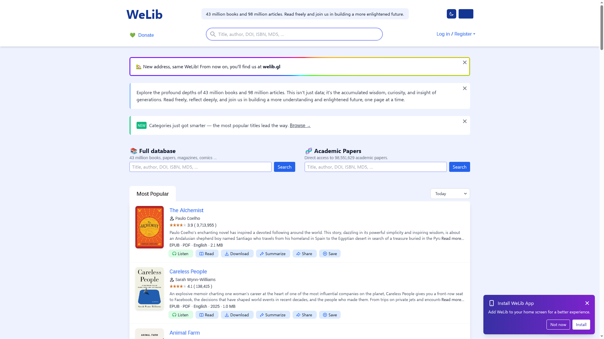

WeLib is a third-party site and may host copyrighted material. Use it only for public-domain or legally permitted books. AiCoN does not host books or endorse piracy. A disclaimer does not make an unauthorised copy legal.
WeLib: check the rights before you read
Looking for books, research papers or study material? WeLib presents a searchable collection with book and academic-paper listings. But access to a file is not proof of permission to read, download, copy or share it. Start with a verified public-domain edition, an open licence, or the rights holder's permission.

What is WeLib?
The live home page lists books and research papers, including recently published commercial titles. It advertises around 43 million books and 98 million papers. Those are the site's own figures, not an independently audited count. Its interface shows search, reading and other book-related features; we did not test a book download or certify the advertised tools.
This is a shadow-library site, not a publisher-authorised bookstore or a guarantee of lawful access. The presence of a modern book on its home page should never be treated as permission from its author or publisher.
Is welib.gl the current WeLib domain?
On 16 November, opening the previously reported WeLib address, welib.org, in a live browser redirected to welib.gl. The resulting page displayed: "New address, same WeLib!" This supports domain continuity with WeLib. It does not certify the operators, security of the site, safety of its files or rights to its catalogue.
Domain changes and look-alike sites can create confusion. Do not assume another similarly named domain is genuine. Avoid entering payment details, reusing a password or installing an app or extension simply because a book site asks. We did not create an account, install software, make a donation or run a malware audit.
Accounts, free access and payment limits
- Public browsing: the home page was accessible without signing in during our check.
- Account prompts: the site has a free registration form asking for email, nickname and password. Its pages also contain a daily-limit prompt asking visitors to register or log in. Exact live allowances were not independently tested.
- Paid membership: the site has a donation/membership system associated with faster access. Do not read "free" as a promise that every feature is unlimited or has no paid tier.
- Availability warning: its contact page says partner servers are unavailable because of hosting closures and that memberships will be extended. Do not assume a payment will restore access. AiCoN does not recommend paying this site.
Publishers Weekly reported on 10 November 2026 that a New York federal court entered a default judgment against WeLib on 9 November, awarding 13 publishers $19.5 million and directing domain/hosting providers to take the service offline. This is reporting about that case, not a claim that visiting a home page alone makes a reader liable. It is a material reason not to present WeLib as an ordinary authorised free-book library. Domains and availability may change.
What can be used legally?
AiCoN has not certified a specific WeLib file as legally available. Only proceed when you can verify the rights for the exact edition and your intended use:
- Public-domain books: check the applicable country, author and edition. An old original text does not automatically settle the rights to a modern translation, introduction, cover or annotated edition. US public-domain status is not automatically the same as status in India or another country.
- Openly licensed books: confirm the actual licence from the author, publisher or another reliable rights source. Follow attribution and any NonCommercial, NoDerivatives or ShareAlike conditions. "Open access" does not mean every kind of reuse is permitted.
- Explicit permission: use a copy distributed with the rights holder's permission, within that permission. A paywall, bestseller label, free button or "for educational use" note is not evidence of permission.
When the rights are unclear, skip the file and look for an authorised publisher edition, open-access copy or legitimate library route. This article provides no copyrighted-book download instructions, bypass methods, mirror directory or referral links.
Eight alternatives to explore
These home pages were checked on 16 November. Choose by the type of material you need, then check the specific book's licence, access conditions and local law. The archives and catalogs below are not a promise that every listed book is free to read or lawful to copy.
1. Standard Ebooks
Carefully formatted editions of public-domain literature. Its copyright assessment is US-based; check local status before using a book elsewhere.
Standard Ebooks home2. National Digital Library of India (NDLI)
A discovery route for learning resources, developed at IIT Kharagpur with Ministry of Education support. It aggregates metadata and directs readers to contributing sources; access can depend on the source.
NDLI home3. Project Gutenberg
Free ebooks, focused on older literature. No fee or registration is required for its ebooks. Its public-domain basis is US-focused, so check local copyright. The home page currently notes a database rebuild that may omit recent additions.
Project Gutenberg home4. Internet Archive
A digital archive with texts and other media. Use public-domain or clearly permitted material and follow item-specific access terms. Not every uploaded item is cleared for unrestricted copying.
Internet Archive home5. Open Library
An Internet Archive project and editable book catalog. A catalog record is not a full-text entitlement. Use public-domain or permitted reading links, and follow current access or borrowing conditions where offered.
Open Library home6. OpenStax
Free, openly licensed textbooks from a Rice University initiative. A useful starting point for school and college subjects. Digital textbooks are free; print copies and some associated services may cost money.
OpenStax home7. Directory of Open Access Books (DOAB)
A free discovery service for scholarly, peer-reviewed open-access books. Follow the publisher's link and check each book's licence before reuse.
DOAB home8. LibreTexts
Open educational resources and subject textbook libraries. Check the licence attached to the page or book, particularly before adapting or redistributing material. Do not assume every platform service is free.
LibreTexts homeHome-page link only
WeLib home page - third-party site; legal-use warning applies
No individual book page, download, payment, referral or alternate-domain link is provided here.
Evidence and sources
- WeLib home page and publicly accessible account, contact and membership information, checked 16 November 2026. To avoid routing readers into account or payment flows, only its home page is linked above.
- Publishers Weekly, 10 November 2026: default judgment and takedown order.
- India Copyright Office: Copyright Act, Chapter V, term of copyright. Different work categories have different rules; this is not legal advice.
- Creative Commons: licence conditions.
- The eight linked home pages above are the primary sources for the alternatives' descriptions.
What the live home page showed

Informational explainer by AiCoN. Third-party access and rights can change. If the licence or permission is unclear, do not use the copy.